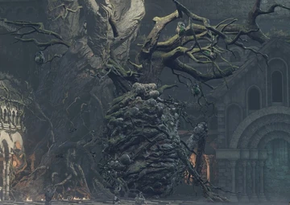

← Volver
← Volver
El Gran Árbol Corrompido es un jefe de Dark Souls III. Es un árbol gigante con extremidades similares a las humanas. Está cubierto de pústulas que actúan como el punto débil del jefe. Cuando el jugador lo encuentra, hallará a su alrededor numerosos no muertos devotos en la arena que lucharán codo a codo con el Árbol durante el combate. Luego de que su barra de salud caiga hasta cierto punto, en vez de atravesar una transformación, lo que cambiará es la arena. Este árbol masivo está repleto de maldiciones y es el objeto de devoción de los habitantes del Asentamiento de los No Muertos.
El jugador deberá encontrar el aquelarre de los Creadores de Montículos antes de derrotar al jefe, o luego deberá seguir pasos extra para poder unirse a dicho aquelarre. Se recomienda equipar un arma de largo alcance para encargarse del Gran Árbol Corrompido de forma rápida. Este jefe es opcional y no se requiere derrotarlo para avanzar en el juego, pero debe ser derrotado para obtener el Horno de Transposición, lo que nos otorga la habilidad de Transposición de Almas (transformar almas de jefe en sus respectivas armas).
¿Dónde se puede encontrar al Gran Árbol Corrompido en Dark Souls III? Se lo puede encontrar cerca del final del Asentamiento de los No Muertos. Parte Inferior del Acantilado es la hoguera más cercana, luego de abrir la puerta del atajo frente a la arena del jefe.
| Playthrough | NG | NG+ | NG++ | NG+3 | NG+4 | NG+5 | NG+6 | NG+7 |
|---|---|---|---|---|---|---|---|---|
| Solo Souls | 7000 | 35000 | 38500 | 39375 | ? | ? | 43750 | 44625 |
| Co-op Souls (1/4) | 1750 | 8750 | 9625 | 9843 | ? | ? | 10937 | 11156 |
Esta es la cantidad de Almas que obtendremos al derrotar al Gran Árbol Corrompido en los diferentes playthrough, desde el New Game regular hasta NG+7. Además, dropeará el Alma del Gran Árbol Corrompido y el Horno de Transposición.
| Playthrough | NG | NG+ | NG++ | NG+3 | NG+4 | NG+5 | NG+6 | NG+7 |
|---|---|---|---|---|---|---|---|---|
| Vida Total | 5.405 | 15.444 | 16.988 | 17.761 | 18.533 | 20.077 | 20.489 | 21.622 |
| Tipo de daño | Básico | Golpe | Cortante | Empuje | Mágico | Fuego | Rayo | Oscuridad |
| Absorciones | -40% | -20% | -75% | -75% | -14% | -110% | -20% | -20% |

 ↑
↑